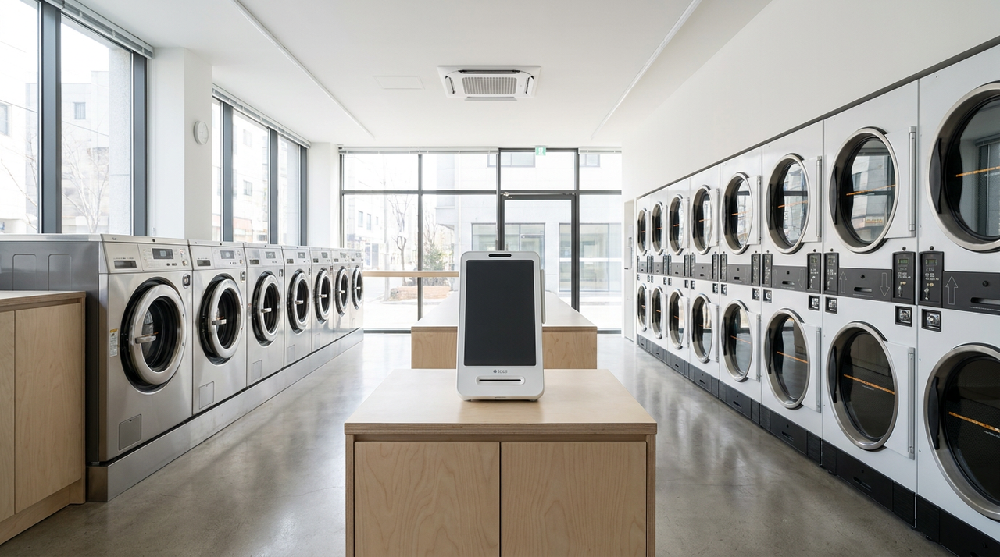
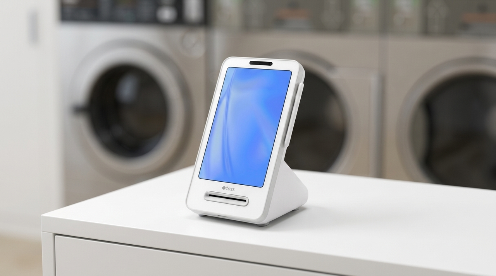
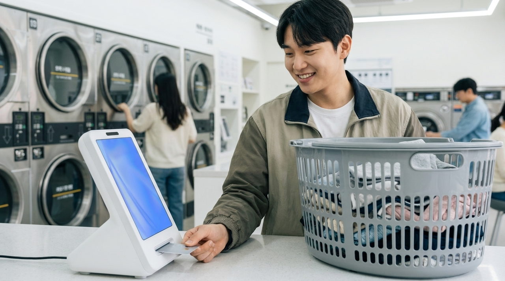

결제기를 한 대 더 놓을지 고민될 때 확인하는 기준
무인 매장을 운영하시는 분들에게 결제기를 한 대 더 놓는 문제는 단순한 지출 판단이 아닙니다. 사람이 상주하지 않는 매장에서는 기기 한 대가 멈추면 그 시간 동안 매출이 그대로 0이 되기 때문입니다. 저희가 셀프 세탁소나 무인 매장을 다니며 확인한 바로는, 두 대째를 놓아야 할 이유는 매출 규모보다 멈췄을 때의 손실과 한 대에 몰리는 시간대에서 나왔습니다. 이 글에서는 언제 한 대로 충분하고 언제 늘려야 하는지, 판단 기준을 정리했습니다.

무인 매장은 '고장 났을 때 대신할 것'이 없습니다
사람이 있는 매장은 결제기가 말썽이면 사장님이 다른 방법을 찾습니다. 무인 매장은 그럴 사람이 없습니다. 손님은 잠깐 서 있다가 그냥 나갑니다. 그리고 대개 그 사실은 몇 시간 뒤에야 알게 됩니다.
이 차이가 판단의 출발점입니다. 유인 매장에서 두 대째는 '빠르게 처리하기 위한 것'이지만, 무인 매장에서 두 대째는 '멈추지 않기 위한 것'입니다. 목적이 다르므로 판단 기준도 달라야 합니다.
그래서 저희는 무인 매장 상담에서 매출부터 여쭙지 않습니다. 먼저 여쭙는 것은 "기기가 한 시간 멈추면 얼마를 잃으시나요"입니다. 이 답이 크면 두 대째는 비용이 아니라 보험에 가까워집니다.
한 대로 충분한 경우도 분명히 있습니다
늘 늘리시라고 말씀드리는 것은 아닙니다. 손님이 하루 종일 고르게 오시고, 한 번에 두 사람이 겹치는 일이 거의 없고, 사장님이 매장 가까이 계셔서 문제가 생기면 금방 확인할 수 있다면 한 대로 충분합니다.

문제는 겹치는 시간대입니다. 셀프 세탁소는 퇴근 후 저녁 시간과 주말에 손님이 몰립니다. 그 시간에 결제를 기다리는 사람이 생기면, 손님은 다음에 다른 곳으로 갑니다. 무인 매장은 사장님이 그 장면을 볼 수 없기 때문에 왜 손님이 줄었는지 끝까지 모르는 경우가 많습니다.
그래서 판단은 하루 평균이 아니라 가장 몰리는 한두 시간을 기준으로 하시는 편이 정확합니다. 그 시간에 대기가 생긴다면, 나머지 시간이 한가해도 늘리는 쪽이 맞습니다.
두 대째를 검토할 때 확인할 항목
| 확인 항목 | 판단 기준 |
|---|---|
| 가장 몰리는 시간대의 대기 발생 | 대기가 생기면 늘리는 쪽 |
| 기기 정지 시 시간당 손실 | 손실이 클수록 예비 필요성이 큼 |
| 매장까지 이동 시간 | 멀수록 현장 대응이 늦어짐 |
| 결제 실패 문의 빈도 | 잦다면 한 대에 부하가 몰린 신호 |
| 매장 면적과 동선 | 입구와 안쪽이 멀면 두 자리가 유리 |
| 기기 간 매출 합산 확인 가능 여부 | 늘려도 매출은 한눈에 보여야 함 |
마지막 항목을 놓치시는 분이 많습니다. 기기를 늘렸는데 매출을 각각 따로 봐야 한다면 관리가 두 배가 됩니다. 늘리더라도 매출은 한곳에서 확인되도록 구성하는 것이 중요합니다.

늘리기 전에 먼저 해볼 수 있는 것
두 대째를 놓기 전에 확인해 볼 것이 하나 있습니다. 지금 한 대가 실제로 어느 시간에 얼마나 쓰이는지입니다. 매출 조회에서 시간대별로 나눠 보면, 몰리는 시간이 생각과 다른 경우가 적지 않습니다. 저녁이라고 생각했는데 실제로는 점심 무렵이거나, 주말이라고 생각했는데 특정 요일에 몰려 있기도 합니다.
이 확인을 먼저 하면 두 대째가 정말 필요한지, 아니면 자리를 옮기는 것만으로 해결되는지가 보입니다. 저희는 상담에서 이 데이터를 함께 보고 나서 제안 드립니다. 필요 없는 기기를 늘려 드리는 것은 사장님께도 저희에게도 좋지 않습니다.
무인 매장은 '문제를 아는 속도'가 매출을 지킵니다
유인 매장과 무인 매장의 가장 큰 차이는 문제가 생겼을 때가 아니라, 문제를 언제 아느냐입니다. 사람이 있으면 즉시 압니다. 없으면 다음에 들르실 때까지 모릅니다.
그래서 무인 매장에서는 결제가 잘 되고 있는지를 사장님이 멀리서 확인할 수 있는 구조가 중요합니다. 매출이 평소 시간대에 평소만큼 발생하고 있는지만 봐도 이상 여부가 대체로 드러납니다. 저녁 시간에 늘 있던 매출이 오늘만 없다면, 손님이 안 온 것이 아니라 기기가 멈춘 것일 수 있습니다.
이 확인을 습관으로 만들어 두시면 대응이 빨라집니다. 하루에 한두 번, 짧게 매출 화면만 열어 보는 것으로 충분합니다. 한 시간 안에 아는 것과 하루 뒤에 아는 것의 차이가 그대로 매출 차이가 됩니다.
셀프 세탁소는 특히 그렇습니다. 손님이 세탁물을 들고 왔다가 결제가 안 되어 돌아가면, 그 손님은 그날 다른 곳으로 갑니다. 그리고 그 다른 곳이 편했다면 다음에도 그곳으로 갑니다. 한 번의 정지가 한 명의 손님으로 끝나지 않는 이유입니다.
저희는 무인 매장 상담에서 두 대째 이야기를 하기 전에 이 확인 습관부터 잡아 드립니다. 늘리지 않고 해결되면 그게 가장 좋기 때문입니다.
자주 묻는 질문
Q. 두 대째는 같은 기종이어야 하나요?
같은 기종이면 사용법과 관리가 통일되어 편합니다. 다만 매장 동선과 설치 자리에 따라 다른 구성이 나을 때도 있어, 매장 도면이나 사진을 보내 주시면 맞춰 안내해 드립니다.
Q. 늘리면 매출 확인이 복잡해지지 않나요?
구성하기에 따라 다릅니다. 기기를 늘려도 매출은 한곳에서 확인되도록 잡아 드립니다.
Q. 무인 매장인데 설치는 어떻게 하나요?
수도권은 저희가 직접 방문해 설치합니다. 사장님이 상주하지 않으셔도 되도록 방문 일정과 출입 방법만 미리 정하면 됩니다.
Q. 비용 부담이 두 배가 되나요?
구성과 기기 수에 따라 달라지므로 상담 시 직접 공급가로 안내해 드립니다. 토스단말기는 약정 없이 이용하실 수 있어 부담을 조절하기 쉽습니다.
무인 매장에서 두 대째는 비용이 아니라 대비입니다
사람이 없는 매장에서 결제기는 사실상 계산대를 지키는 직원 역할을 합니다. 그 자리가 멈추면 매장도 함께 멈춥니다. 가장 몰리는 시간대에 대기가 생기는지, 기기가 한 시간 멈추면 얼마를 잃으시는지. 이 두 가지만 알려 주시면 한 대로 충분한지 두 대가 맞는지 같이 판단해 드리겠습니다. 정품 신제품 보증, 수도권 직영 설치로 방문합니다.
- 📞 전화상담 1544-7754
- 🌐 홈페이지 https://nwpos.co.kr

📷 인스타그램 팔로우 https://www.instagram.com/nurinetworkspos

▶️ 유튜브 구독 https://www.youtube.com/@nurinetworks